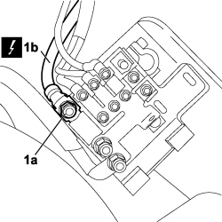
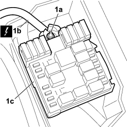

5530B32 <x>CABLE BETWEEN BATTERY AND JUNCTION UNIT IN ENGINE COMPARTMENT - R&R</x>
- Path
- Procedures > 55 ELECTRICAL EQUIPMENT > 5530 CURRENT GENERATION > 5530B BATTERY AND LEADS > 5530B32 <x>CABLE BETWEEN BATTERY AND JUNCTION UNIT IN ENGINE COMPARTMENT - R&R</x>
- Kind
- repair procedure (removal / refitting; the operation number is the code)
- Applies to
- all engines; all production periods
- Interactive page
- https://sloeber94.github.io/elrnDB-fCrm/en/#/194000721
Applies to: all engines; all production periods
 Removing
Removing
 Refitting
Refitting- Turn the ignition key to the OFF position and extract it.
- Open the bonnet.
- Disconnect the negative battery terminal.
Description | Connector | |
|---|---|---|
BATTERY |
1. Undo the fixing nut (1a) for the electrical connection (1b) to the supply box on the battery and disconnect the connection.
Description | Connector | |
|---|---|---|
1b | MAXI FUSE BOX ON BATTERY |

Applies to: all engines; all production periods
1. Remove cover (1a) from the junction unit, releasing from the three clips (1b).

Applies to: all engines; all production periods
1. Undo the fixing nut (1a) for the electrical connection (1b) to the junction unit (1c) and disconnect the connection.
Remove the cable from the vehicle.
Description | Connector | |
|---|---|---|
1b | ENGINE COMPARTMENT JUNCTION UNIT |

Applies to: all engines; all production periods
Refitting
Removing- Check that the lead between the battery and the junction unit is undamaged and is correctly anchored to the connections.
- If necessary, carry out continuity tests.
- Position the cable on the vehicle.
- Connect the electrical connection to the junction unit.
Description | Connector | |
|---|---|---|
ENGINE COMPARTMENT JUNCTION UNIT |
- Connect the electrical connections to the supply casing on the battery.
Description | Connector | |
|---|---|---|
MAXI FUSE BOX ON BATTERY |
Fit the junction unit cover and anchor with the three clips.
- Connect the negative battery lead.
Description | Connector | |
|---|---|---|
BATTERY |
- Close the bonnet.